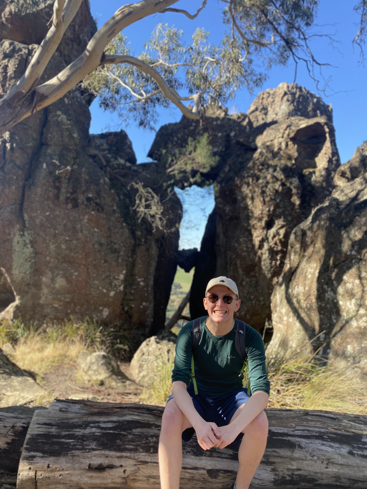

Elliot MarshallI am a PhD candidate working with Todd Oliynyk on mathematical and numerical relativity at the School of Mathematics at Monash University. A copy of my CV can be found here.Physical Address: School of Mathematics Monash University 9 Rainforest Walk, VIC 3800, Australia |

|
General Relativity, Partial Differential Equations, Numerical Methods, Analysis. My current work uses a combination of analytical and numerical methods to study the global stability properties of cosmological perfect fluid models in Einstein's general theory of relativity.
- (with Grigorios Fournodavlos and Todd Oliynyk) Future stability of perfect fluids with extreme tilt and linear equation of state p=c2sρ for the Einstein-Euler system with positive cosmological constant: The range 1/3 < c2s < 3/7 arXiv:2404.06789
- (with Florian Beyer and Todd Oliynyk) Future instability of FLRW fluid solutions for linear equations of state p=Kρ with 1/3 < K < 1, Phys. Rev. D, 107, (2023), 104030, pdf
- (with Todd Oliynyk) On the stability of relativistic perfect fluids with linear equations of state p=Kρ where 1/3 < K < 1, Lett. Math. Phys. 113 (2023), 102, pdf
PhD in Mathematics (2022 - Present), Monash University, Main Supervisor: Todd Oliynyk, External Co-Supervisor: Florian Beyer BSc (Hons), 1st Class in Mathematics (2021), University of Otago, Supervisor: Jörg Frauendiener BSc in Mathematics (2020), University of Otago.
Future Instability of Relativistic Perfect Fluids at the 12th Australasian Conference on General Relativity and Gravitation (ACGRG), Hobart, Tasmania, November 27 - December 1, 2023. Future Instability of Relativistic Perfect Fluids at the MATRIX conference on Hyperbolic PDEs and Non-Linear Evolution Problems, Creswick, Australia, September 18-29, 2023 Future Instability of Relativistic Perfect Fluids at the Australia-New Zealand Student Conference on Relativity, Cosmology, and Astrophysics (Online), May 8-10, 2023. The Future Stability of Relativistic Perfect Fluids at the Interdisciplinary junior scientist workshop: Mathematical General Relativity, Wildberg, Germany, February 26 - March 10, 2023.
I was the main organiser of the first Australia-New Zealand Student Conference on Relativity, Cosmology, and Astrophysics, May 8-10, 2023.